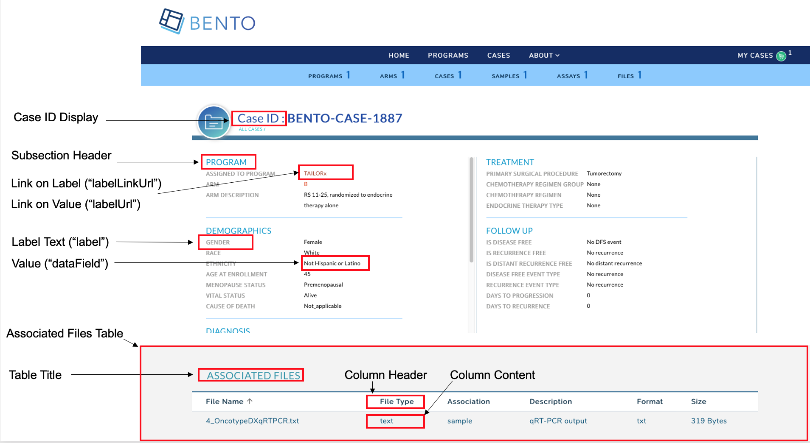

Case Detail Page¶
The Case Detail Page lists the key attributes of a case or study subject participating in a clinical study or research program in your data sharing platform.
 Case Detail Page. Displayed are the configurable components of a Case Detail Page.
Prerequisites¶
The files that specify the configuration parameters of the Case Detail Page are stored in the GitHub
https://github.com/CBIIT/bento-frontend(representing your GitHub username asYOUR-USERNAME). Create a local clone of your fork into a local directory, represented in these instructions as$(src).Configuration Parameters for all Case Detail Page elements can be specified in the file:
$(src)/bento-frontend/blob/master/src/bento/caseDetailData.js.All images and icons that you use in your Bento instance should be accessible via a public url.
Please review the list of GraphQL queries to select query type(s) that return your data of interest.
Configuring the Case Detail Page.¶
The Case Detail Page allows you to add key case attributes as label:value pairs within a set of subsections. A maximum of 6 sections can be added to the Case Detail Page; 3 in the Left Hand Panel and 3 in the Right Hand Panel. Within each subsection a maximum of 10 attributes can be displayed as label:value pairs.
If more than 3 subsections are configured in a panel, only the first 3 subsections will be displayed in the UI, other subsections will be ignored.
If more than 10 properties are configured, only first 10 properties will be displayed in the UI, other properties will be ignored.
The Case Detail Page also allows you to add an optional table to list case level data.
Configuring the Case Detail Page Header¶
The Case Detail Page Header displays the Case ID.
Open the file
$(src)/bento-frontend/blob/master/src/bento/caseDetailData.js.Under
caseHeader:Set the field
labelto the label text to be displayed.Set the field
dataFieldto the GraphQL API query field that returns the case id.Add the GraphQL API query field to
GET_CASE_DETAIL_DATA_QUERY.
Configuring the Left and Right Hand Panels of Case Detail Page¶
The Left and Right Hand Panels allow for the display of case attributes as label:value pairs with a set of subsections; related data attributes can be grouped together in a section.
Open the file
$(src)/bento-frontend/blob/master/src/bento/caseDetailData.js.Under the appropriate section
leftPanelorrightPanel:Add a object {sectionHeader: , secitionDesc: properties: } to add a subsection.
Set the field
sectionHeaderto the display name for the subsection.Set the field
sectionDescto an optional description for your subsection.Add an object {label:,dataField: ,link: ,labellink: } to add a label:value pair to the subsection.
Set the field
labelto the label name to be displayed.Set the field
dataFieldto the GraphQL API query that returns the value to be displayed.You can embed an optional link in your label or your value, or both. Links can be internal or external. * To add a link to your value specify an internal or external link by adding a
linkattribute to your object. * To add a link to your label specify an internal or external link by adding alabelLinkattribute to your object.Add the GraphQL API query field to
GET_CASE_DETAIL_DATA_QUERY.
Example of adding a subsection to the Left Hand Panel:
...
const leftPanel = [
{
sectionHeader: '<Your Subsection Header Title>',
sectionDesc: '< Your Subsection description.>',
properties: [
{
label: '<Display Label>',
dataField: '<GraphQL API query field that returns value>',
link: '<An internal or external link to be added to your value>',
},
{
label: '<Display Label>',
dataField: '<GraphQL API query field that returns value>',
labelLink: '<An internal or external link to be added to your label>',
},
...
]
}
...
]
const GET_CASE_DETAIL_DATA_QUERY = gql`
<Your GraphQL API query fields>
`
Internal Links to Labels and Values¶
links starting with ‘/’ are considered as internal links
Internal links shall be opened in the same tab.
Dynamic links can be generated by passing a valid table filed to ‘{}’. For example, ‘/arm/{study_acronym}’ shall link to ‘arm/A’
External Links to Labels and Values¶
External links shall start with ‘http://’ or’https://’
External links shall show-up with ‘externalLinkIcon’ . In this version of Bento, the External Link Icon can be configured by the custodian.
External link shall be opened in a new tab.
Dynamic links can be generated by passing a valid table filed to ‘{}’. For example, ‘https://pubmed.ncbi.nlm.nih.gov/{pubmed_id}’ shall link to ‘https://pubmed.ncbi.nlm.nih.gov/29860917/’
The Case Detail Page Table¶
The Case Detail Page table can be used to display case-level information such as the files that belong to a case.
Configuring the Case Detail Page Table.¶
Open
$(src)/bento-frontend/src/bento/caseDetailData.js.In
table:
The
displayfield is set to true, by default. Set this field to false if you do not wish to display a table in the Case Detail Page.Set the field
titleto the the title of your table.Set the field
dataFieldto the name of the GraphQL API query being used to return data for the Case Detail Page. Note: This query should match the GraphQL API query inGET_CASE_DETAIL_DATA_QUERY.Set the field
defaultSortFieldto the name of the query field that will be used to sort the Case Detail Page Table. Note: this query field should be displayed as one of the columns in the Case Detail Page Table.Set the field
defaultSortDirectionto the sort order of your choice. Valid values are ‘asc’ (ascending) and ‘desc’ (descending).Add your GraphQL API query to
GET_CASE_DETAIL_DATA_QUERY.
Example:
...
const table = {
display: true,
title: '<Table Title>',
dataField: '<GraphQL API query returning data for this page.>',
defaultSortField: '<GraphQL API query field used to sort the table.>',
defaultSortDirection: '<sort order, asc|desc>',
...
const GET_CASE_DETAIL_DATA_QUERY = gql`{
'<Your GraphQL query>'' {
'<Data fields returned by your GraphQL API query>'
...
}
}
Adding columns to the Case Detail Page Table.¶
You can add up to 10 columns in the Case Detail Page Table. If you add more than 10 columns, Bento will display the first 10 columns without an error or warning message. The top-down order of columns will be displayed left to right on the UI.
Open
$(src)/bento-frontend/src/bento/caseDetailData.js.Under
table, add an object{dataField: , header: , link: ,}to thecolumnslist:
Set the field
dataFieldto the GraphQL API query data field that returns the data for the column.Set the field
headerto the column header name.Set the field
linkto an internal or external link that is to be embedded into the the column value. See below for additional instructions on adding internal and external links. Links are optional.Add your GraphQL API query data field to
GET_PROGRAM_DETAIL_QUERY.
Example:
const table = {
...
columns: [
{
dataField: '<GraphQL API query field returning data for this column>',
header: '<Column Header>',
link: '<link to be embedded in column value>',
},
{
dataField: '<GraphQL API query field returning data for this column>',
header: 'PubMed ID',
},
...
],
};
const GET_CASE_DETAIL_DATA_QUERY = gql`{
'<Your GraphQL query>'' {
'<Data fields returned by your GraphQL API query>'
...
}
}
Internal Links in the Case Detail Page Table.¶
links starting with ‘/’ are considered as internal links.
Internal links shall be opened in the same tab.
Dynamic links can be generated by passing a valid table field to ‘{}’. For example, ‘/program/{program_id}’ shall link to ‘program/NCT00310180’.
External Links in the Case Detail Page Table.¶
External links shall start with ‘http://’ or’https://’.
External links shall show-up with ‘externalLinkIcon’.
External link shall be opened in a new tab.
Dynamic links can be generated by passing a valid table filed to ‘{}’. For example, ‘https://pubmed.ncbi.nlm.nih.gov/{pubmed_id}’ shall link to ‘https://pubmed.ncbi.nlm.nih.gov/29860917/’.